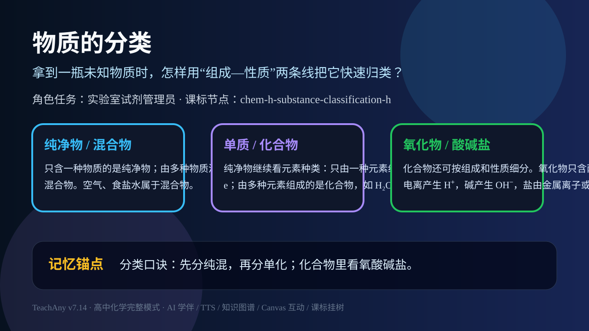

ABT Story
角色任务：实验室试剂管理员
And 已有经验
你已经见过空气、水、铁粉、食盐水这些常见物质，也知道它们的外观和用途不同。
But 真实卡点
如果只靠名称和外观，面对一柜未知试剂很快会混乱：空气是纯净物吗，氧气和氧化铜为什么都带“氧”？
Therefore 本课任务
所以要用组成和性质建立分类地图，把混合物、纯净物、单质、化合物、氧化物、酸、碱、盐放到正确位置。
拿到一瓶未知物质时，怎样用“组成—性质”两条线把它快速归类？

先选一个你关心的问题。后面的例子、提示和 AI 学伴都会围绕这个问题来帮你推进。
选择或输入后，本课会围绕你的问题展开。
你已经见过空气、水、铁粉、食盐水这些常见物质，也知道它们的外观和用途不同。
如果只靠名称和外观，面对一柜未知试剂很快会混乱：空气是纯净物吗，氧气和氧化铜为什么都带“氧”？
所以要用组成和性质建立分类地图，把混合物、纯净物、单质、化合物、氧化物、酸、碱、盐放到正确位置。
空气属于哪一类？
只含一种物质的是纯净物；由多种物质混合且各成分保持原性质的是混合物。空气、食盐水属于混合物。
纯净物继续看元素种类：只由一种元素组成的是单质，如 O₂、Fe；由多种元素组成的是化合物，如 H₂O、NaCl。
化合物还可按组成和性质细分。氧化物只含两种元素且一种是氧；酸电离产生 H⁺，碱产生 OH⁻，盐由金属离子或铵根与酸根组成。
记忆锚点：分类口诀：先分纯混，再分单化；化合物里看氧酸碱盐。
易错提醒：常见错误：把“含氧元素的物质”都叫氧化物。硫酸 H₂SO₄ 含氧，但有三种元素，不是氧化物。
不要只看结论。动手改变变量后，再用一句话解释画面为什么变了。
下列判断正确的是？
识别并写出本节核心定义、公式或分类标准。
把本课标准用于一个实验数据或真实生活场景。
设计一个反例，说明常见错误为什么站不住脚。
如果你能解释“拿到一瓶未知物质时，怎样用“组成—性质”两条线把它快速归类？”，这节课就真正过关了。
本节点的前置、后续和同域知识由标准知识图谱模块自动渲染。不要手写图谱节点。